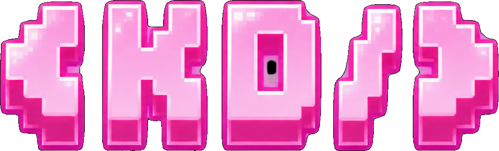

01
BINA
Hasilkan kerja digital responsif, bereksperimen dengan teknologi web dan terus tingkatkan kemahiran anda.

HerStacks ialah ruang komuniti teknologi untuk mereka yang mahu membina, berhubung, belajar dan meneroka teknologi bersama-sama.
Ruang berasaskan komuniti yang memfokuskan teknologi praktikal, hubungan dan penerokaan — dengan maklumat projek semasa yang ringkas dan terus.
Hasilkan kerja digital responsif, bereksperimen dengan teknologi web dan terus tingkatkan kemahiran anda.
Temui orang lain yang berminat dengan teknologi, berkongsi idea dan berkembang melalui komuniti.
Terokai bidang baharu, termasuk laluan HerOps yang memfokuskan keselamatan siber.
Acara langsung seterusnya dijadualkan pada 3 Oktober 2026 jam 9:00 malam MYT. Kumpulan WhatsApp kini sedang dibina.
Kumpulan masih sedang disediakan. Apabila pautan rasmi tersedia, ia boleh ditambah di sini tanpa mengubah bahagian lain laman.
BUTIRAN ACARAHerStacks digerakkan melalui latar belakang teknologi praktikal yang memfokuskan pembangunan front-end, aplikasi web responsif dan pembelajaran berterusan dalam perisian serta keselamatan siber.
Reka bentuk web & grafik bebas, laman responsif, hosting, penyelenggaraan dan penjenamaan.
Latihan MDEC / APU yang memfokuskan pembangunan aplikasi web.
Latihan pembangunan Python selesai.
UiTM Shah Alam, Ijazah Sarjana Muda Sains Komputer (Kepujian), dijangka 2028; pembangunan perisian, teknologi web, pangkalan data, rangkaian dan kursus keselamatan siber.
HerOps memberikan identiti dan ruang khusus untuk ahli yang berminat dengan sesi keselamatan siber, sumber pembelajaran, projek dan pengumuman komuniti pada masa hadapan.
KETAHUI LAGIJawapan ringkas berdasarkan maklumat projek HerStacks semasa.
Acara langsung HerStacks seterusnya dijadualkan pada 3 Oktober 2026 jam 9:00 malam MYT.
Kumpulan WhatsApp kini sedang dibina. Laman boleh dikemas kini dengan pautan rasmi apabila ia tersedia.
HerOps ialah laluan yang memfokuskan keselamatan siber untuk ahli HerStacks yang berminat dengan cybersec.
Latar belakang duta merangkumi HTML, CSS, JavaScript, React, PHP, Python, Django, SQL, Git/GitHub dan alat pembangunan web berkaitan.